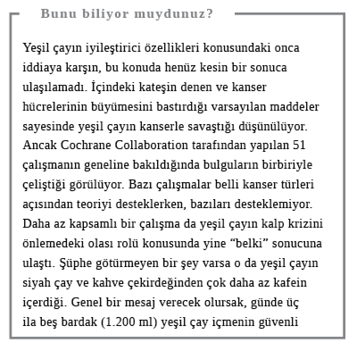

Enerji Takviyeleri
Gün içinde enerjinizin düştüğünü hissettiğinizde kahve makinesini ziyaret etme veya biraz çikolata, cips atıştırma fikri aklınızı çelebilir. Böyle zamanlarda azıcık kafein ya da şeker takviyesi yapmanın kötü bir yanı olmasa da günü atlatmak için tamamen kahve ve şekerden destek almak sağlıksız beslenme ve kötü yeme alışkanlıklarının işaretidir. O durumda belki kahvaltı ya da öğle yemeğini atlıyorsunuz, aşırı miktarda kalori ve kafein yüklü içecek tüketiyorsunuz, belki de yeterince mola verip hareket etmiyor, zihninizi açmıyor, kan dolaşımınızı hızlandırmıyorsunuz.
Ne Yiyip İçmeli?
İşte kilo almadan ya da kahve dükkânlarında bir servet harcamadan güne devam etmenin yolları.
Sütlü mü köpüklü mü?
Kahve molasında 600 kaloriden ve günlük önerilen doymuş yağ miktarınızın (20 gr) neredeyse tamamından nasıl tasarruf edeceğinizi bilmek ister misiniz? Starbucks’ın en büyük boy, tam yağlı sütten yapılan beyaz çikolatalı ve kremalı mocha’sının yerine, yağsız sütlü en büyük boy Americano (50 kalori) koyarak. Bu abartılı bir örnek olsa da kahve zincirlerinde satılan kahvelerin son 10 yılda aldığımız kilolara katkısı yadsınamaz. Daha abartısız bir karşılaştırma ise az yağlı sütle yapılan büyük boy latte’nin (150 kalori) yerine az yağlı sütten yapılan orta boy cappuccino (90 kalori) karşılaştırması olabilir. Aradaki fark, suya oranla içerikteki süt miktarının farkında yatar: İtalyanca’da “süt” anlamına gelen Latte’de, cappuccino’dan çok daha fazla süt vardır (az sütlü Americano ya da macchiato ise daha da az süt içerir). Süt elbette ki besleyici bir içecektir ama büyük boy, tatlandırılmış sütlü kahvelerin öyle olmadığı kesin. Bazı kahve zincirleri internet sitelerinde besin bilgilerini veriyorlar. Sevdiğiniz içecekleri karşılaştırmak ve kaloriyi azaltmak için başka bir içeceğe geçiş yapmak istiyorsanız bu bilgilere göz atın (kafein alımı için bkz. İçecek kafeinli mi, kafeinsiz mi?).
Yanıt: Köpüklü
Meyve suyu mu, buzlu meyveli içecek mi?
Buzlu meyveli içecek (smoothie) sadece meyveliyse ve süt ya da yoğurt gibi süt ürünleri içermiyorsa kalori açısından sade meyve suyuyla arasında pek bir fark yoktur. Sandviç zincirlerinin birinden satın alınan 250 ml’lik portakal suyu 114 kalori ve 28,6 gr şeker içerirken, çilekli buzlu içecek 128 kalori ve 28 gr şeker içerir. Buzlu içecekte meyve suyu yerine ezilmiş meyve kullanıldığı için biraz daha fazla lif vardır. Muzlu olanlara dikkat edin. Bunlar çilek gibi daha pahalı meyvelere ek olarak içeceğe hacim kazandırır ve onu daha tatlılaştırır. Buzlu içeceğe sade ve az yağlı süt ya da yoğurt eklemek fazla kalori almadan daha uzun süre tok kalmanızı sağlar çünkü bu gıdalar yağ ve protein içerir. Ancak smoothie’nin günlük önerilen beş porsiyon meyve ve sebze içinde bir, hatta kimi zaman iki porsiyonun yerine geçtiğini unutmayın.
Yanıt: Buzlu meyveli içecek

Buzlu meyveli içecek mi, meyve mi?
Tartışılacak pek bir şey yok: 227 gr’lık paketlerdeki çilek ve bir de muz, 250 ml’lik bir şişedeki çilekli ve muzlu smoothie’yle aynı kaloriyi içerir. Buzlu meyveli içecek (smoothie) üretim sırasında besin değerinden bir miktar kaybeder ve günlük meyve-sebze porsiyonunun sadece birinin (ya da en fazla) ikisinin yerine geçer. Dolayısıyla buzlu meyveli içecek ile aynı kalori karşılığında çilekleri ve muzun yarısını yiyip artanını sonrası için saklayarak daha sağlıklı iki öğün almış olursunuz.
Yanıt: Meyve

Portakal mı, kivi mi?
Atıştırmalık meyve seçmek istiyorsanız en sağlıklısı kividir. Kivi aynı boyutta bir portakalla hemen hemen aynı miktarda C vitamini ve bir elmadan daha çok lif içerir. İsterseniz soyup yiyin isterseniz tepesini kesin ve etli kısmını bir kaşıkla sıyırıp çıkarın (çocuklar yumurtalığın içinde bu şekilde verilince severek yer. Bizim evde “haşlanmış yumurta gibi kivi” diye anılır).
Yanıt: Kivi

Yer fıstığı mı, kuruyemiş ve kuru üzüm mü?
50 gr’lık kavrulmuş yer fıstığını, 45 gr’lık kuruyemiş ve kuru üzümle değiştirirseniz, en az 100 kaloriden, 30 gr yağdan ve bolca tuzdan tasarruf edersiniz. İşte basit bir yer değiştirmeyle gün içinde besin maddesi alımınızı nasıl arttırıp, kalori miktarını nasıl düşürebileceğinize bir örnek daha.
Yanıt: Kuruyemiş ve kuru üzüm
Bir kutu diyet içecek mi, bir parçalı çikolata mı?
Amacınız kafeinle canlanmaksa bir kutu diyet koladaki miktar, küçük bir çubuk (en az yüzde 70 kakao kuru maddesi içeren) bitter çikolatayla hemen hemen aynıdır. Diyet kolanın hiçbir besleyici değeri olmadığından, kalorisi de neredeyse yoktur. Çikolata ise (elbette ki) şeker ve doymuş yağ içerdiği için -35 gr’lık bir çikolata yaklaşık 190 kalori- kilosuna dikkat edenlere önerilmesi zordur. Ancak yağ daha uzun süre tok tutar, kakao içeriği yüksek çikolatada bulunan flavonol adlı besin maddeleri ise kalp sağlığınıza iyi gelebilir. Ne var ki bilimciler bunun işleyişini tam olarak bilemiyor ve tabii yağ ile şeker içeriği de tüm iyi özellikleri ortadan kaldırabilir. Ah, ahh…
Yanıt: Çikolata

